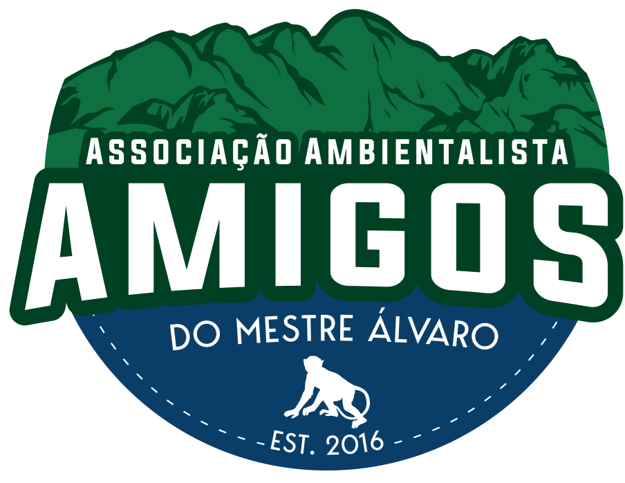
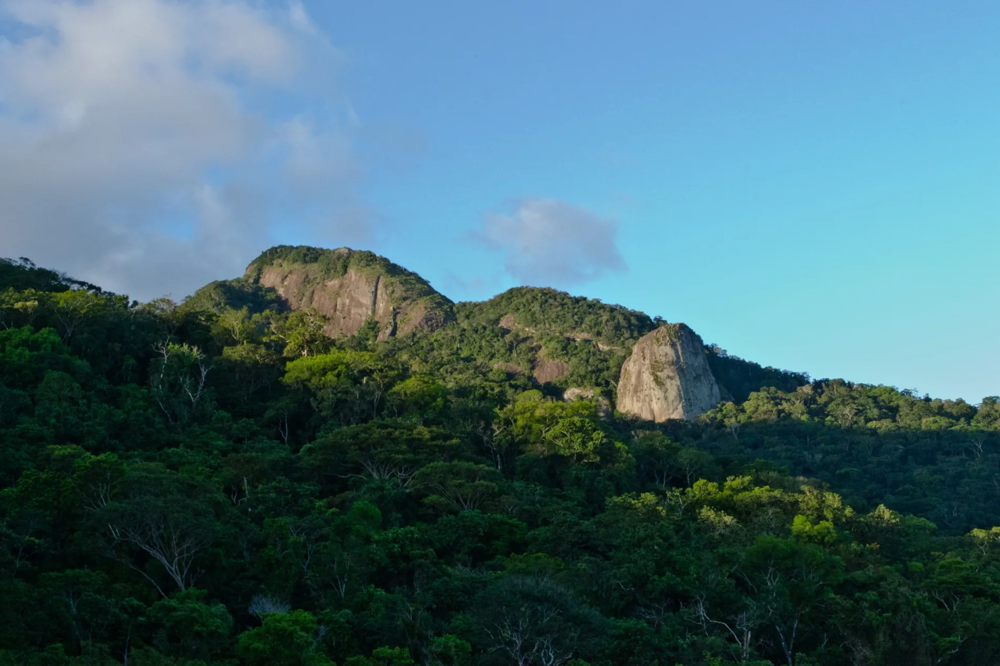
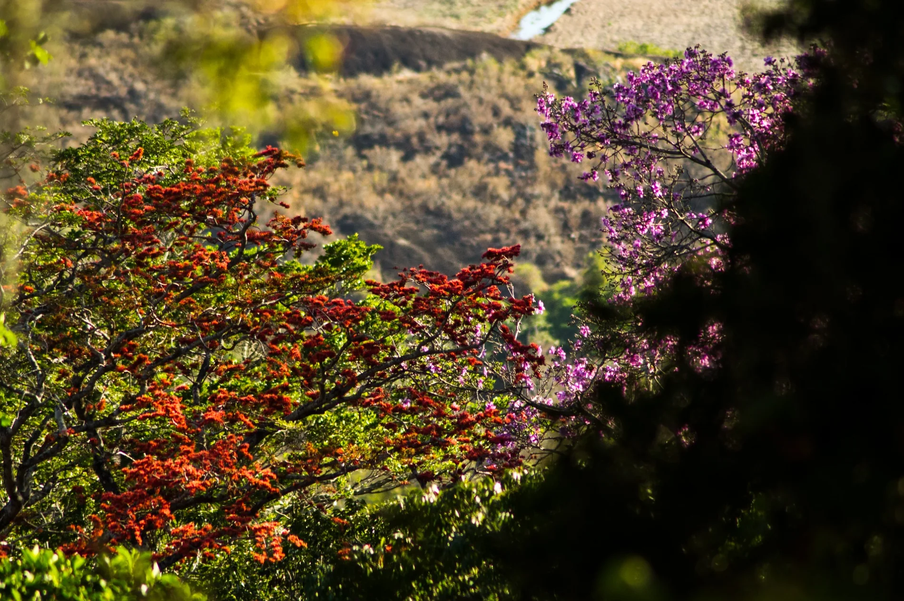
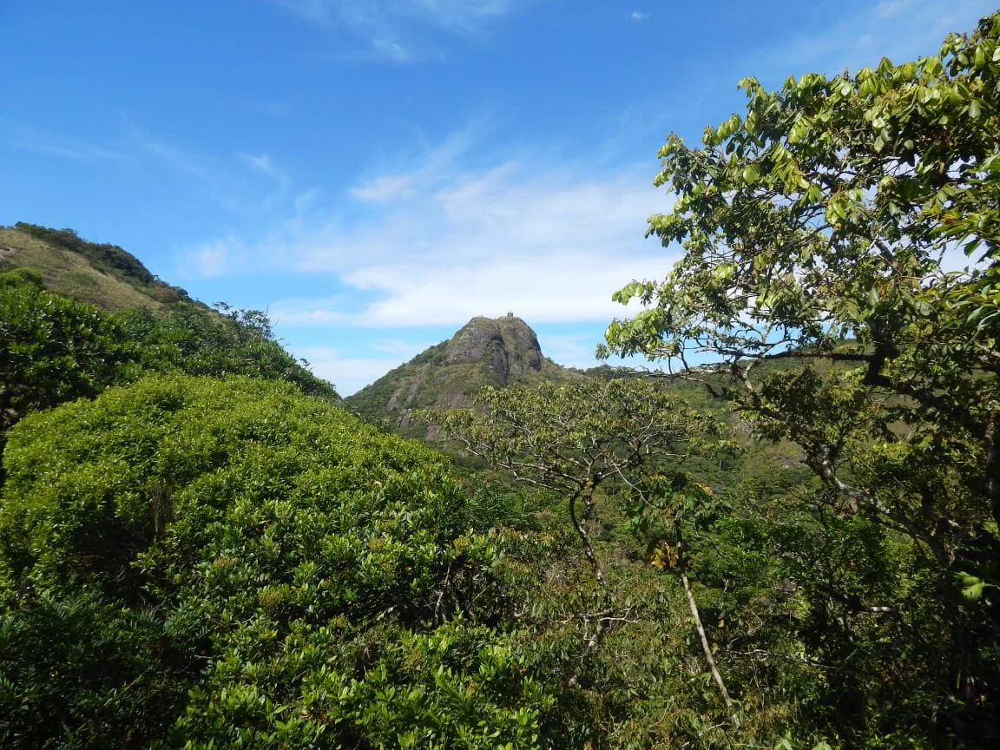
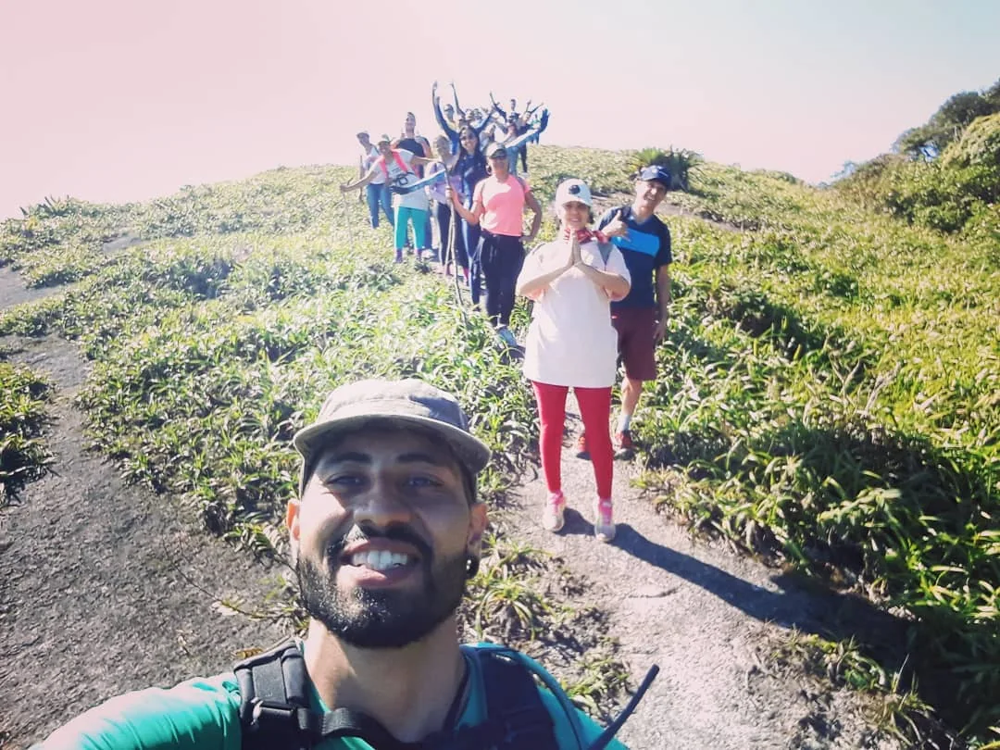

01
Preservar
Defesa da APA Mestre Álvaro, conscientização sobre a conservação e mobilização contra a degradação ambiental.
CUIDADO COM O TERRITÓRIO ↗
AMIGOS DO MESTRE ÁLVARO Faça parte
A NOSSA CAUSA É VIVA
Nascemos do encontro entre pessoas, montanhas e o desejo de fazer a diferença.
Somos o Instituto Amigos do Mestre Álvaro, uma organização sem fins lucrativos da Serra, no Espírito Santo. Atuamos pela proteção e valorização da Área de Proteção Ambiental Mestre Álvaro, aproximando pessoas da natureza por meio de experiências, educação e ação coletiva.
Conheça nossa atuaçãoO TERRITÓRIO NOS MOVE
A força do Mestre Álvaro inspira uma comunidade inteira a olhar para o futuro e a proteger suas origens.
INTERPRETAÇÃO ARTÍSTICA DO RELEVO · MOVIMENTO 3D
Um Mestre Álvaro vivo para todas as gerações.
Preservar vai além de proteger uma paisagem. É criar vínculos, despertar consciência e transformar cuidado em atitude.
Defesa da APA Mestre Álvaro, conscientização sobre a conservação e mobilização contra a degradação ambiental.
CUIDADO COM O TERRITÓRIO ↗Iniciativas socioambientais, atividades educativas e experiências que despertam uma relação mais consciente com a natureza.
CONSCIÊNCIA EM MOVIMENTO ↗Trilhas guiadas, encontros e ações coletivas que aproximam a comunidade e fortalecem o pertencimento.
PESSOAS QUE FAZEM A DIFERENÇA ↗Projetos que mostram como a conservação acontece no dia a dia, com participação e compromisso.

01 / NASCENTESRecuperação de nascentes e educação ambiental nas escolas, conectando o cuidado com a água à formação das próximas gerações.
Saiba como participar
02 / BEM-ESTARMeio Ambiente, Corpo e Mente: um convite ao bem-estar por meio de atividades físicas em contato com espaços verdes.
Conheça a iniciativaAGENDA & EXPERIÊNCIAS
Explore o calendário e converse com a gente sobre trilhas, ações ambientais, encontros e possibilidades de participação.
Carregando a programação da associação. Os eventos aparecem somente após serem cadastrados ou sincronizados.
NOSSA GALERIA
A NATUREZA NOS APROXIMA
Quer participar de uma trilha, propor um evento, colaborar como voluntário ou apoiar um projeto? Escreva para a gente.
Fale também pelo Instagram